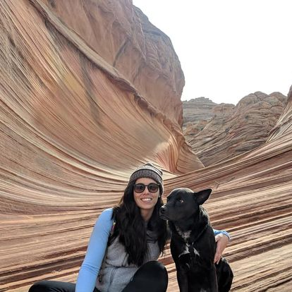

Hello, there! My name is Lili, I am currently enrolled in the Masters of Software Development program at Boston University, and this is my website! It has been a great experience and quite the change from my previous career as a Recreational Therapist. I’m sure you’re curious – why make the big switch? Well, I like debugging code between than debugging people’s minds; plus, software development provides so many more opportunities that I can’t wait to pursue.
I hope to draw from my own personal experiences to provide inspiration for future projects. For example – I was a medic in the U.S. Army and am very interested in veteran outreach. I hope to use my programming knowledge to improve the lives of those who have served. Ultimately, I’d like to design software that connects veterans to their VA hospital treatment plans and goals. In addition to coding, I enjoy spending time outside with my husband and our four-legged child Oakley.